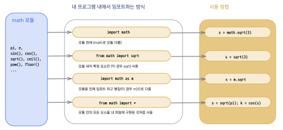
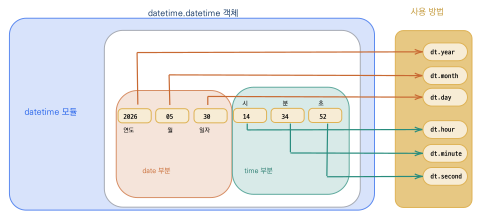
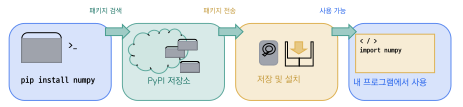

모듈 활용

import구문으로 모듈을 불러와 사용할 수 있다.math·random·datetime등 표준 라이브러리를 활용할 수 있다.pip로 외부 패키지를 설치하고 사용할 수 있다.- 필요한 모듈을 검색하고 공식 문서를 읽어 적용할 수 있다.
이 장에서 배우는 모듈 활용법은 이후 실전 프로젝트에서 핵심적인 역할을 한다. 예를 들어 달의 위상을 계산하려면 datetime 모듈이, 단어장 앱의 퀴즈 기능에는 random 모듈이, 웹 앱을 만들려면 외부 패키지 설치(pip)가 반드시 필요하다.
프로그래밍을 하다 보면 같은 기능을 여러 프로젝트에서 반복적으로 작성하게 되는 경우가 많다. 날짜를 계산하거나, 수학 함수를 사용하거나, 난수를 생성하는 코드가 대표적인 예이다. 만약 이런 코드를 매번 처음부터 작성해야 한다면 개발자의 시간과 노력이 크게 낭비될 것이다. 다행히 파이썬은 이러한 문제를 해결하기 위해 모듈module이라는 강력한 재사용 시스템을 제공한다.
모듈은 마치 잘 정리된 도구 상자와 같다. 목공을 할 때 톱, 망치, 드라이버가 담긴 도구 상자를 가져와 필요한 도구를 꺼내 쓰듯이, 프로그래밍에서도 미리 만들어진 함수와 클래스가 담긴 모듈을 가져와 필요한 기능을 사용할 수 있다. 파이썬 표준 라이브러리에는 100개 이상의 모듈이 포함되어 있어, 날짜 처리, 수학 계산, 파일 관리, 네트워크 통신 등 거의 모든 분야의 기능을 즉시 활용할 수 있다.
이 장에서는 먼저 모듈을 불러오는 import 문법을 배우고,
이어서 실무에서 가장 많이 사용되는 datetime, math, random 모듈을 실습한다.
마지막으로 파이썬 생태계의 수십만 개 외부 패키지를 설치하고 관리하는 pip에 대해 알아본다.
이 장을 마치면 "바퀴를 다시 발명하지 않는다(Don’t reinvent the wheel)"는 프로그래밍 격언의 의미를
몸소 체험하게 될 것이다.
7.1 모듈과 import
모듈module이란 파이썬 함수나 변수, 클래스들을 모아 놓은 스크립트 파일을 말한다.
확장자가 .py인 파이썬 파일 하나가 곧 하나의 모듈이 될 수 있다.
파이썬은 여러 기관과 개발자들에 의해 만들어진 수많은 모듈을 보유하고 있으며,
이 모듈들을 이용하면 복잡한 기능도 몇 줄의 코드로 구현할 수 있다.
왜 모듈이 중요할까? 한 가지 비유를 들어 보자. 요리를 할 때 모든 재료를 직접 재배하고 도구를 직접 만들 필요는 없다. 마트에서 재료를 사고, 잘 만들어진 조리도구를 사용하면 훨씬 효율적으로 요리를 완성할 수 있다. 프로그래밍에서 모듈이 바로 이런 역할을 한다. 전 세계의 뛰어난 개발자들이 이미 검증하고 최적화한 코드를 가져다 쓸 수 있으므로, 우리는 프로그램의 핵심 로직에만 집중할 수 있는 것이다.
이렇게 미리 개발된 모듈은 표준 라이브러리standard library라는 이름으로 파이썬 설치 파일과 함께 제공된다. 문자열과 텍스트 처리를 위한 모듈, 이진 데이터 처리, 날짜, 시간, 배열 등의 자료형 처리를 위한 모듈, 수치 연산과 수학 함수 모듈, 파일과 디렉토리 접근, 데이터베이스 접근을 위한 모듈, 데이터 압축, 그래픽 모듈 등 100여 가지 이상의 표준 라이브러리들이 있다.
import 문
모듈을 사용하려면 먼저 import 문으로 모듈을 불러와야 한다.
다음은 현재 스크립트나 대화창에서 모듈을 불러오는 명령이다.
import module_name1 [, module_name2,...]모듈을 가져온 후에는 모듈이름.함수이름() 또는 모듈이름.변수이름과 같이
점(.) 연산자를 사용하여 모듈 안의 요소에 접근한다.
이 점 연산자는 "~의 안에 있는"이라는 의미로 이해하면 된다.
예를 들어 math.pi는 "math 모듈 안에 있는 pi"를 뜻한다.
import math
print(math.pi) # 3.141592653589793
print(math.sqrt(16)) # 4.0from … import 문
모듈 전체가 아니라 특정 함수나 변수만 가져오고 싶을 때는 from \ldots{} import 구문을 사용한다.
이 방식을 쓰면 모듈 이름 없이 바로 함수를 호출할 수 있어 코드가 더 간결해진다.
datetime.datetime.now()와 같이 "[모듈 이름].[클래스 이름].[메소드 이름]()"을 점 연산자로
구분해서 적는 것이 매우 번거롭기 때문에, from [모듈 이름] import [클래스 이름]이나
from [모듈 이름] import [함수 이름]과 같은 방식으로 모듈로부터 클래스나 함수를 불러오게 되면
"[클래스 이름].[메소드 이름]()" 방식과 같이 간단하게 클래스의 메소드를 호출할 수 있다.
from math import sqrt, pi
print(pi) # 3.141592653589793
print(sqrt(25)) # 5.0모듈의 모든 요소를 한꺼번에 가져오려면 *을 사용한다.
다만 이 방식은 이름 충돌의 위험이 있으므로 주의가 필요하다.
예를 들어, 우리가 만든 변수 이름이 모듈에 있는 함수 이름과 같다면
예상치 못한 오류가 발생할 수 있다.
from math import *
print(ceil(3.2)) # 4
print(floor(3.8)) # 3from math import *처럼 모든 요소를 한꺼번에 가져오는 방식은 편리하지만 위험할 수 있다.
모듈 안에 정의된 수십 개의 이름이 현재 프로그램에 한꺼번에 들어오므로, 기존 변수나 함수와 이름이 겹쳐서 예기치 않은 동작을 일으킬 수 있다.
소규모 실습이 아닌 실무 프로젝트에서는 필요한 이름만 명시적으로 가져오는 것이 좋다.
as 별칭
모듈 이름이 길거나 자주 사용하는 경우 as 구문으로 짧은 별칭을 지정할 수 있다.
모듈 내에 있는 클래스나 메소드를 활용할 때 점으로 연결하는데,
모듈 이름이 너무 긴 경우 계속해서 이름을 써주는 것이 번거로울 수 있다.
이때, as를 활용하여 모듈의 새 이름을 지정할 수 있다.
import datetime as dt # datetime -> dt
import random as rd # random -> rd
import math as m # math -> m
import turtle as t # turtle -> t보통 math 모듈은 m, datetime은 dt, random은 rd,
turtle은 t와 같은 짧은 이름을 널리 사용한다.
별칭을 지정하면 이후 코드에서 짧은 이름으로 모듈에 접근할 수 있어 코드가 간결해진다.
import datetime as dt
start_time = dt.datetime.now()
start_time.replace(month = 12, day = 25)datetime.datetime(2024, 12, 25, 7, 1, 25, 880317)
파이썬 표준 라이브러리
파이썬 설치와 함께 기본적으로 제공되는 모듈들을 파이썬 표준 라이브러리Python standard library라고 한다. 문자열 처리, 날짜와 시간, 수학 함수, 파일 처리, 난수 생성 등 100여 가지 이상의 모듈이 포함되어 있다.
| 모듈 | 설명 |
|---|---|
datetime | 날짜와 시간 처리 |
math | 수학 함수와 상수 |
random | 난수 생성 |
os | 운영체제 관련 기능 |
sys | 파이썬 인터프리터 관련 기능 |
json | JSON 데이터 처리 |
time | 시간 관련 기능 |
그림 7.1은 모듈에서 함수나 변수를 가져오는 세 가지 방식을 시각적으로 보여 준다.
import 방식에 따라 모듈의 요소에 접근하는 방법이 달라지므로,
상황에 맞는 방식을 선택하는 것이 중요하다.

모듈 내에 있는 클래스나 메소드를 활용할 때 점으로 연결하는데, 모듈 이름이 너무 긴 경우 계속해서 이름을 써주는 것이 번거로울 수 있다.
이때, as를 활용하여 모듈의 새 이름을 지정할 수 있다.
import \textasciitilde{} as가 긴 모듈 이름을 간략하게 부르는 별명을 붙여주는 방법이라고 한다면,
from \textasciitilde{} import 구문 역시 호출을 간단하게 하는 방법이다.
두 방식의 차이를 이해하고 상황에 맞게 선택하는 것이 좋다.
import 모듈은 모듈 전체를, from 모듈 import 이름은 특정 요소만 가져온다.
as를 사용하면 모듈에 짧은 별칭을 붙여 코드를 간결하게 작성할 수 있다.
파이썬의 모듈 시스템 덕분에 이미 검증된 코드를 재사용하여 개발 시간을 크게 단축할 수 있다.
7.2 날짜와 시간 — datetime
datetime 모듈은 날짜와 시간에 관한 기능을 제공하고 조작할 수 있도록 한다.
우리가 일상에서 "오늘 날짜가 며칠이지?", "크리스마스까지 며칠 남았지?",
"100일 후는 몇 월 며칠이지?"와 같은 질문을 자주 하듯이,
프로그램에서도 날짜와 시간을 다루는 일은 매우 흔하다.
회원가입일 계산, 이벤트 기간 확인, 로그 기록 등 거의 모든 소프트웨어에서 날짜 처리가 필요하다.
이 모듈 안에는 date, datetime, time, timedelta,
timezone, tzinfo 등의 클래스가 포함되어 있다.
이 클래스들은 날짜, 시간, 시간대, 시간대 정보를 편리하게 이용할 수 있는 기능을 가지고 있다.
이를 사용하기 위해서는 앞 절에서 배운 것과 같이 import datetime이라고 입력하면 된다.
현재 날짜와 시간
datetime.datetime.now() 메소드를 이용하면 현재의 년, 월, 일, 시, 분, 초, 밀리초(ms)
단위의 시간까지 나타난다.
datetime 모듈 안에서 datetime이라는 클래스는 날짜와 시간에 관련된 여러 가지 기능을 제공한다.
이 클래스의 함수에 접근하기 위해서는 datetime.datetime과 같이 클래스 이름 다음에
마침표(.) 연산자를 써주면 된다.
앞에 나온 datetime은 모듈의 이름이고 뒤에 나온 datetime은 클래스의 이름이 된다.
import datetime
# 현재 날짜와 시간
print(datetime.datetime.now())
# datetime.datetime(2025, 1, 2, 6, 57, 27, 904565)이처럼 매번 datetime.datetime.now()와 같이 긴 이름을 쓰는 것이 번거로우므로,
as 구문을 사용하여 별칭을 지정하거나 from 구문을 사용하는 것이 편리하다.
import datetime as dt # dt라는 별칭 사용
start_time = dt.datetime.now()
print(start_time)또는 from datetime import datetime 구문을 사용하면 더욱 간결하게 쓸 수 있다.
from datetime import datetime
start_time = datetime.now()
print(start_time)오늘 날짜만 필요하다면 date.today()를 사용한다.
date 클래스는 날짜에 관련된 정보를 포함하고 있으므로 이를 이용하면
오늘의 날짜를 간단하게 살펴볼 수 있다.
반환된 객체의 year, month, day 속성을 사용하면
연도만, 월만, 또는 일만 따로 꺼내 쓸 수 있다.
import datetime as dt
today = dt.date.today()
print(today) # 2026-04-06
print(today.year) # 2026
print(today.month) # 4
print(today.day) # 6
그림 7.2은 datetime 객체가 어떤 구성요소로 이루어져 있는지를 보여 준다. datetime 객체는 날짜 부분(year, month, day)과 시간 부분(hour, minute, second)으로 구성되며, 각 속성에 점(.) 연산자로 접근할 수 있다.
파이썬은 dir() 함수를 제공하는데 이 함수는 모듈이 가진 클래스의 목록을 출력해 준다.
따라서 다음과 같은 방법으로 datetime 모듈이 어떤 클래스와 속성, 메소드를 가지고
있는지 살펴볼 수 있다.
import datetime
print(dir(datetime))['MAXYEAR', 'MINYEAR', '__builtins__',..., 'date', 'datetime','datetime_CAPI', 'time', 'timedelta', 'timezone', 'tzinfo']
위의 결과에서 MAXYEAR는 datetime 오브젝트가 표현 가능한 최대 년도로 9999 값을 가지며,
MINYEAR는 1 값을 가진다.
datetime 모듈은 date, datetime, datetime_CAPI, time,
timedelta, timezone, tzinfo와 같은 클래스를 포함하고 있다.
날짜와 시간 변경 — replace()
datetime에서 날짜나 시간 값을 변경하고 싶다면 replace() 메소드를 이용하면 된다.
이때 메소드의 키워드 인자로 변경하고 싶은 항목의 이름과 값을 지정한다.
import datetime as dt
start_time = dt.datetime.now()
# 월을 12, 일을 25로 변경
new_time = start_time.replace(month = 12, day = 25)
print(new_time)2026-12-25 07:01:25.880317
이 코드를 살펴보면 start_time이라는 변수를 생성하여 datetime.datetime.now() 값을 할당한다.
그 후 replace() 메소드에 인자 값을 대입하여 start_time에 저장된 값의 시간을 변경한다.
이때 메소드의 키워드 인자 month의 값으로 12를 지정하여 월을 12월로 변경하였다.
마찬가지로 day 인자의 값은 25로 변경하였다.
날짜 연산 — timedelta
timedelta 클래스를 이용하면 날짜와 시간의 차이를 계산할 수 있다.
이 클래스는 +, - 연산자를 이용하여 시간의 차이 연산을 할 수 있다.
timedelta는 두 날짜(혹은 시간) 사이의 차이를 편리하게 표현하는 데에 사용되는 클래스이다.
다음은 크리스마스까지 남은 날을 계산하는 예제이다.
import datetime as dt
today = dt.date.today()
print(f'Today is {today.year}/{today.month}/{today.day}.')
xMas = dt.datetime(2026, 12, 25)
gap = xMas - dt.datetime.now()
print(f'Christmas is {gap.days} days {gap.seconds // 3600} hours away.')Today is 2026/4/7.Christmas is 261 days 15 hours away.
이 코드를 따라가 보면 datetime 모듈의 date.today() 메소드를 이용하여 오늘 날짜 값을
today라는 변수에 대입한다.
그리고 today 속성의 year, month, day 값을 각각 출력해 준다.
다음으로 datetime 클래스의 생성자로 (2026, 12, 25)와 같은 인자를 넣어
2026년 12월 25일 값을 가지는 클래스 xMas를 생성한다.
그 후, xMas에서 오늘 날짜 today를 빼주면 크리스마스와 오늘 날짜 사이의 차이 값을 얻을 수 있다.
이 차이값은 timedelta 클래스형으로 저장되며,
이 클래스의 days와 seconds 속성을 이용하여 남은 날 수와 초를 얻을 수 있다.
이를 이용하여 100일 후와 100일 전의 날짜도 구해보자.
import datetime as dt
print('Today =', dt.datetime.now())
hundred = dt.timedelta(days = 100) # 100일
plus100day = dt.datetime.now() + hundred
print('100 days later =', plus100day)
minus100day = dt.datetime.now() - hundred
print('100 days ago =', minus100day)Today = 2026-04-07 10:32:49.474428100 days later = 2026-07-16 10:32:49.600513
100 days ago = 2025-12-28 10:32:49.667744
timedelta는 위의 코드와 같이 timedelta 객체를 생성할 때 days라는 키워드 인자로 100을 대입한다.
그러면 hundred는 100일의 timedelta 값을 갖게 된다.
그런 다음에 현재 날짜 now()에 hundred를 더하고 뺀 후 각각 출력해 본다.
| 나타내는 날짜 | 코드 |
|---|---|
| 1주 | datetime.timedelta(weeks = 1) |
| 1일 | datetime.timedelta(days = 1) |
| 1시간 | datetime.timedelta(hours = 1) |
| 1분 | datetime.timedelta(minutes = 1) |
| 1초 | datetime.timedelta(seconds = 1) |
| 1밀리초 | datetime.timedelta(milliseconds = 1) |
| 1마이크로초 | datetime.timedelta(microseconds = 1) |
날짜 포매팅 — strftime
strftime() 메소드를 사용하면 날짜와 시간을 원하는 형식의 문자열로 변환할 수 있다.
이 기능은 datetime의 기능과 유사하다.
import datetime as dt
now = dt.datetime.now()
print(now.strftime('%Y-%m-%d')) # 2026-04-06
print(now.strftime('%B %d, %Y')) # April 06, 2026
print(now.strftime('%H:%M:%S')) # 14:30:25주요 형식 지정자는 다음과 같다: %Y(4자리 연도), %m(월), %d(일),
%H(시), %M(분), %S(초), %A(요일).
time 모듈은 시간에 관련된 정보를 제공하는 모듈이다.
서버용 시스템의 운영체제로 많이 사용되는 유닉스 시스템은 1970년 1월 1일 0시 0분 0초 협정 세계시(UTC)를
시작 시간으로 해서 지금까지의 경과한 시간을 백만분의 1초 단위로 기록하고 저장하는 체계를 가지고 있다.
이 시작 시간을 에폭epoch이라 하며,
time.time() 함수는 에폭 이후 경과 시간을 초 단위 실수로 반환한다.
또한 time.sleep() 함수는 일정한 시간 동안 현재 실행 중인 쓰레드를 일시 중지시키는 기능을 한다.
이 함수들은 프로그램의 실행 시간 측정이나 지연 실행 등에 활용된다.
7.3 수학과 난수 — math, random
프로그래밍에서 수학적 계산은 빠질 수 없는 핵심 요소이다.
원의 넓이를 구하거나, 삼각함수를 계산하거나, 로그 값을 구하는 등의 작업은
과학, 공학, 금융, 게임 등 거의 모든 분야에서 필요하다.
또한 주사위를 던지거나, 카드를 섞거나, 로또 번호를 생성하는 것처럼
무작위 결과가 필요한 상황도 매우 흔하다.
파이썬의 math 모듈과 random 모듈은 이러한 수학 계산과 난수 생성 기능을 제공한다.
math 모듈
math 모듈은 수학과 관련된 함수들이 있는 모듈이다.
math 모듈에는 원주율 \(\pi\) 값, 자연상수 \(e\) 값 등이 정의되어 있다.
뿐만 아니라 ceil(), floor(), trunc(), fabs(),
copysign(x, y) 등의 수학과 관련된 함수들도 광장히 많이 포함되어 있다.
이 함수들의 목록은 dir()이라고 하는 내장 함수를 이용하여 볼 수 있다.
import math
print(dir(math)) # math 모듈의 모든 속성과 메소드 나열['__doc__', '__loader__', '__name__', '__package__', '__spec__', 'acos','acosh', 'asin', 'asinh', 'atan', 'atan2', 'atanh', 'ceil', 'copysign',
'cos', 'cosh', 'degrees', 'e', 'erf', 'erfc', 'exp', 'expm1', 'fabs',
'factorial', 'floor', 'fmod', 'frexp', 'fsum', 'gamma', 'gcd', 'hypot',
'inf', 'isclose', 'isfinite', 'isinf', 'isnan', 'ldexp', 'lgamma',
'log', 'log10', 'log2', 'modf', 'nan', 'pi', 'pow', 'radians', 'sin',
'sinh', 'sqrt', 'tan', 'tanh', 'tau', 'trunc']
위의 결과는 앞에서 배운 dir() 함수를 이용하여 math의 사용 가능한 함수들의 목록을 나열한 것이다.
이렇게 나타난 함수 중의 몇 개만 함께 활용해보자.
import math as m
print(m.pi) # 3.141592653589793 -- 원주율 상수
print(m.e) # 2.718281828459045 -- 자연상수 e
print(m.pow(3, 3)) # 27.0 -- 3의 3제곱
print(m.fabs(-99)) # 99.0 -- -99의 절대값
print(m.ceil(2.1)) # 3 -- 2.1의 올림
print(m.ceil(-2.1)) # -2 -- -2.1의 올림
print(m.floor(2.1)) # 2 -- 2.1의 내림
print(m.log(2.71828)) # 0.999999327... -- 자연로그
print(m.log(100, 10)) # 2.0 -- 밑이 10인 로그
print(m.sqrt(144)) # 12.0 -- 제곱근자주 사용하는 math 모듈의 함수들을 표로 정리하면 다음과 같다.
| 함수 | 예시 | 설명 |
|---|---|---|
sqrt(x) | sqrt(16) \(\to\) 4.0 | 제곱근 |
pow(x, y) | pow(2, 3) \(\to\) 8.0 | 거듭제곱 |
ceil(x) | ceil(3.2) \(\to\) 4 | 올림 |
floor(x) | floor(3.8) \(\to\) 3 | 내림 |
fabs(x) | fabs(-5) \(\to\) 5.0 | 절대값 |
log(x) | log(m.e) \(\to\) 1.0 | 자연로그 |
log(x, b) | log(100, 10) \(\to\) 2.0 | 밑이 b인 로그 |
sin(x) | sin(m.pi/2) \(\to\) 1.0 | 사인 (라디안) |
radians(x) | radians(90) \(\to\) 1.5707... | 각도\(\to\)라디안 변환 |
degrees(x) | degrees(m.pi) \(\to\) 180.0 | 라디안\(\to\)각도 변환 |
삼각함수와 라디안
math 모듈의 삼각함수를 사용할 때 주의해야 할 점이 있다.
sin(), cos(), tan() 함수는 라디안radian 값을 인자로 사용한다.
그런데 우리가 일상에서 사용하는 각도는 60분법의 일반각(이하 각도라고 표기함)이다.
따라서 sin() 함수에 90을 넣으면 1이 나와야 하는데 0.8939… 의 값이 나오는 것을 볼 수 있다.
그 이유는 파이썬에서 제공하는 삼각함수들이 라디안 각도를 인자 값으로 사용하기 때문이다.
import math as m
print(m.sin(0.0)) # 0.0 -- 정상, sin(0) = 0
print(m.sin(90.0)) # 0.8939... -- sin(90도)가 아님!따라서 60분법의 일반각 90도를 표기하고 싶다면 math.pi/2.0과 같은 라디안 표기로 변환해서
사용해야만 한다.
radians() 함수는 각도 값을 라디안으로 변환하고 degrees() 함수는 라디안을 각도 값으로 변환한다.
import math as m
# pi/2를 직접 사용 -- 올바른 결과
print(m.sin(m.pi/2.0)) # 1.0
# 원주율 값
print(m.pi) # 3.141592653589793
# 90도를 라디안으로 변환한 후 sin 사용
print(m.radians(90)) # 1.5707963267948966 (pi/2)
print(m.sin(m.radians(90))) # 1.0 -- 올바른 결과!이제 위의 코드를 수정하여 m.sin()의 입력 값으로 라디안 값을 넣으니 정확히 1.0이 나온다.
m.pi는 \(\pi\)의 근사값이지만, CPython 내부에서 sin(pi/2)는 정확히 1.0을 반환하도록 처리된다.
파이썬의 \(\pi\) 값은 m.pi를 통해 출력해 볼 수 있으며,
m.radians(90)을 하게 되면 90도의 라디안 값을 출력한다.
math 모듈의 삼각함수(sin, cos, tan)는 라디안 값을 인자로 사용한다.
일반 각도(60분법)로 입력하면 잘못된 결과가 나온다.
반드시 math.radians()로 변환한 후 사용하거나, math.pi를 이용하여 라디안 값을 직접 계산해야 한다.
이것은 초보자가 가장 많이 하는 실수 중 하나이다.
C 프로그래밍 언어는 1972년 미국 벨 연구소의 데니스 리치에 의해서 개발된 프로그래밍 언어로 유닉스 운영체제의 핵심을 이룬다.
이 언어는 1980년대 이후 컴퓨터 과학을 배우는 대부분의 대학에서 핵심적인 언어로 활용되어 왔으며,
지금도 많은 개발자들이 이용하고 있다.
파이썬 언어 역시 내부의 핵심 기능은 C 언어로 구성되어 있는데
이 C 언어에는 math.h라는 헤드 파일과 표준 수학 라이브러리가 존재한다.
파이썬의 math 모듈은 대부분 C 언어에 있는 표준 수학 라이브러리를 그대로 이용하고 있다.
random 모듈
random 모듈은 임의의 수를 생성하는 기능을 제공한다.
게임, 시뮬레이션, 데이터 샘플링, 암호 생성 등 다양한 분야에서 활용된다.
"무작위"라는 개념은 프로그래밍에서 매우 중요한데,
예를 들어 게임에서 적의 출현 위치를 매번 다르게 하거나,
통계 분석에서 데이터를 무작위로 추출하는 작업 등에 반드시 필요하기 때문이다.
import random as rd
print(rd.random()) # 0.0 이상 1.0 미만의 실수
print(rd.randint(1, 6)) # 1 이상 6 이하의 정수 (주사위)
print(rd.randrange(0, 10)) # 0 이상 9 이하의 정수random() 함수는 0.0 이상 1.0 미만의 실수를 반환하고,
randint(a, b)는 a 이상 b 이하의 정수를 반환한다.
randrange(a, b)는 a 이상 b 미만의 정수를 반환하는데,
이 차이를 혼동하면 의도하지 않은 결과가 나올 수 있으므로 주의해야 한다.
리스트와 함께 사용하면 더욱 유용하다.
import random as rd
colors = ['red', 'blue', 'green', 'yellow', 'purple']
print(rd.choice(colors)) # 리스트에서 무작위로 하나 선택
rd.shuffle(colors) # 리스트를 무작위로 섞기 (원본 변경)
print(colors) # 순서가 무작위로 바뀜
print(rd.sample(colors, 3)) # 3개를 비복원 추출choice() 함수는 리스트에서 하나를 무작위로 선택하고,
shuffle() 함수는 리스트의 순서를 무작위로 섞는다(원본이 변경된다는 점에 주의).
sample() 함수는 지정한 개수만큼 비복원 추출한다.
비복원 추출이란 한 번 선택된 항목은 다시 선택되지 않는다는 의미이다.
| 함수 | 설명 |
|---|---|
random() | 0.0 이상 1.0 미만의 실수 반환 |
randint(a, b) | a 이상 b 이하의 정수 반환 |
randrange(a, b) | a 이상 b 미만의 정수 반환 |
choice(seq) | 시퀀스에서 무작위로 하나 선택 |
shuffle(seq) | 시퀀스를 무작위로 섞음 (원본 변경) |
sample(seq, k) | 시퀀스에서 k개를 비복원 추출 |
다음은 random 모듈을 활용한 간단한 로또 번호 생성기이다.
1부터 45까지의 숫자 중 6개를 비복원 추출하여 정렬한 결과를 출력한다.
import random as rd
lotto = rd.sample(range(1, 46), 6) # 1~45 중 6개 선택
lotto.sort()
print('This week lotto numbers:', lotto)This week lotto numbers: [3, 11, 22, 28, 34, 41]
이 프로그램을 실행할 때마다 다른 번호가 나오는 것을 확인할 수 있다.
range(1, 46)은 1부터 45까지의 숫자 범위를 만들고,
sample() 함수가 그 중 6개를 중복 없이 선택한다.
sort() 메소드로 오름차순 정렬하면 실제 로또 번호와 같은 형태로 출력된다.
math 모듈로 수학 함수와 상수(\(\pi\), \(e\))를 사용하고,
random 모듈로 난수를 생성하거나 리스트에서 무작위 선택을 할 수 있다.
삼각함수는 라디안 값을 인자로 사용하므로 radians()로 변환 후 사용해야 한다.
randint()와 randrange()의 범위 차이(이하 vs 미만)에 주의한다.
7.4 외부 패키지 설치 — pip
파이썬 표준 라이브러리만으로도 많은 작업을 수행할 수 있지만,
전 세계 개발자들이 만든 수많은 외부 패키지external package를 활용하면
더욱 강력한 프로그래밍이 가능해진다.
데이터 분석을 위한 pandas, 웹 개발을 위한 flask,
인공지능을 위한 tensorflow 등이 대표적인 외부 패키지이다.
이러한 패키지들은 PyPIPython Package Index라는 중앙 저장소에 등록되어 있으며,
현재 50만 개 이상의 패키지가 등록되어 있다.
pip이라는 도구를 이용하면 이 방대한 생태계의 패키지를 쉽게 설치하고 관리할 수 있다.
이것은 마치 스마트폰의 앱스토어에서 필요한 앱을 검색하고 설치하는 것과 비슷하다.
pip 명령어
pip은 파이썬 패키지를 설치하고 관리하는 명령줄 도구이다.
파이썬을 설치하면 함께 제공된다.
터미널(명령 프롬프트)에서 다음과 같이 사용한다.
pip install package_name # 패키지 설치 pip uninstall package_name # 패키지 제거 pip list # 설치된 패키지 목록 보기 pip install --upgrade package # 최신 버전으로 업그레이드
예를 들어 데이터 분석에 많이 쓰이는 numpy 패키지를 설치하려면 다음과 같이 입력한다.
pip install numpy
externally-managed-environment 오류가 난다면최근 파이썬 배포판(예: Homebrew, Ubuntu 24.04 이상)에서는 시스템 파이썬에 직접 pip install을 실행하면 error: externally-managed-environment 오류가 발생한다.
이는 시스템 파이썬을 보호하기 위한 정책(PEP 668)이며, 오류가 아니다.
이런 경우 아래처럼 가상환경virtual environment을 먼저 만들어 활성화한 뒤 그 안에서 pip install을 실행하면 된다. 가상환경의 자세한 설명은 이 절 뒤쪽 가상환경 항목에서 다룬다.
python3 -m venv myenv # 가상환경 생성 source myenv/bin/activate # macOS/Linux myenv\Scripts\activate # Windows pip install numpy # 가상환경 안에 설치

그림 7.3은 pip을 통한 패키지 설치와 사용의 전체 흐름을 보여 준다. pip install 명령은 PyPI 저장소에서 패키지를 검색하여 설치하며, 설치가 완료되면 파이썬 코드에서 바로 import하여 사용할 수 있다.
다음은 numpy를 이용한 간단한 배열 연산 예제이다.
import numpy as np
a = np.array([1, 2, 3, 4, 5])
print(a * 2) # [2 4 6 8 10] -- 요소별 곱셈
print(a.mean()) # 3.0 -- 평균
print(a.sum()) # 15 -- 합계numpy는 과학 기술 분야에서 표준으로 사용되는 패키지로,
일반 파이썬 리스트보다 훨씬 빠른 배열 연산을 지원한다.
위 코드에서 a * 2는 배열의 모든 요소에 2를 곱하는 연산으로,
for 문 없이도 간결하게 표현할 수 있다는 것이 큰 장점이다.
주요 외부 패키지
파이썬 생태계에는 다양한 분야에서 활용할 수 있는 유명한 패키지들이 있다. 다음 표는 분야별로 가장 널리 사용되는 패키지를 정리한 것이다.
| 패키지 | 용도 |
|---|---|
numpy | 수치 계산과 배열 처리 |
pandas | 데이터 분석 |
matplotlib | 그래프와 시각화 |
requests | 웹 요청 처리 |
flask | 웹 애플리케이션 개발 |
Pillow | 이미지 처리 |
이 패키지들은 각 분야의 사실상의 표준(de facto standard)으로 자리 잡았다.
예를 들어, 데이터 과학자의 거의 모든 작업은 numpy와 pandas로 시작되며,
시각화에는 matplotlib이 가장 기본적인 도구로 사용된다.
이러한 외부 패키지들 덕분에 파이썬은 특히 데이터 분석과 인공지능 분야에서
가장 인기 있는 프로그래밍 언어로 자리매김하게 되었다.
가상환경
여러 프로젝트를 진행하다 보면 프로젝트마다 필요한 패키지와 버전이 다를 수 있다.
예를 들어, A 프로젝트는 numpy 1.24 버전을 사용하고, B 프로젝트는 1.26 버전이 필요할 수 있다.
이 두 버전을 하나의 파이썬 환경에 동시에 설치할 수는 없으므로 충돌이 발생하게 된다.
이때 가상환경virtual environment을 사용하면 프로젝트별로 독립적인 패키지 환경을 만들 수 있다. 가상환경은 각 프로젝트에 전용 "작업 공간"을 만들어 주는 것과 같다.
python -m venv myenv # myenv라는 이름의 가상환경 생성 source myenv/bin/activate # 가상환경 활성화 (macOS/Linux) myenv\Scripts\activate # 가상환경 활성화 (Windows) deactivate # 가상환경 비활성화
가상환경을 활성화한 상태에서 pip install을 실행하면 패키지가 해당 가상환경에만 설치된다.
따라서 다른 프로젝트에 영향을 주지 않으며, 프로젝트가 끝나면 가상환경 폴더를 삭제하면
깔끔하게 정리된다.
실무 프로젝트에서는 가상환경 사용이 거의 필수적이므로, 이 개념을 잘 익혀 두는 것이 좋다.
7.5 정규표현식 — re
문자열을 다루다 보면 "이메일 형식이 올바른지", "숫자만 추출하고 싶다", "전화번호 표기를 통일하고 싶다"와 같은 패턴 기반 처리가 자주 필요하다.
앞서 배운 문자열 메소드(find(), replace(), split())만으로도 간단한 작업은 가능하지만, "숫자 11자리", "@ 기호 앞뒤로 어떤 문자든"과 같은 규칙을 표현하려면 한계가 있다.
이때 사용하는 것이 정규표현식regular expression, regex이다.
정규표현식은 문자열의 패턴을 기호로 기술하는 작은 언어로, 거의 모든 프로그래밍 언어가 지원하는 표준 도구이다.
파이썬에서는 표준 라이브러리의 re 모듈로 사용한다.
re 모듈의 핵심 함수
re 모듈에서 가장 자주 쓰는 네 가지 함수는 match(), search(), findall(), sub()이다.
match()는 문자열의 시작이 패턴과 일치하는지 검사하고, search()는 문자열 어디든 패턴이 등장하는지 검사한다.
findall()은 일치하는 모든 부분을 리스트로 반환하며, sub()은 일치하는 부분을 다른 문자열로 치환한다.
import re
text = 'My phone is 010-1234-5678 and home is 02-555-7777.'
m = re.search(r'\d{2,3}-\d{3,4}-\d{4}', text)
print(m.group()) # 처음 일치한 부분 문자열
nums = re.findall(r'\d{2,3}-\d{3,4}-\d{4}', text)
print(nums) # 일치한 모든 부분의 리스트
cleaned = re.sub(r'\d', '*', text) # 모든 숫자를 *로 치환
print(cleaned)010-1234-5678{}['010-1234-5678', '02-555-7777']
My phone is ***-****-**** and home is **-***-****.
문자열 앞에 붙은 r은 원시 문자열raw string을 뜻하는 표시로, 백슬래시를 그대로 둔다.
정규표현식에는 백슬래시가 자주 등장하므로 항상 r'\dots' 형태로 쓰는 것이 관례이다.
자주 쓰는 메타문자
정규표현식에서 의미가 부여된 특수 기호를 메타문자metacharacter라고 한다. 처음에는 외울 것이 많아 보이지만, 다음 표의 8~ 10개만 익혀도 실무 패턴 대부분을 작성할 수 있다.
| 기호 | 의미 | 예시 |
|---|---|---|
. | 줄바꿈을 제외한 임의의 문자 1개 | a.c → abc, a1c |
d | 숫자 1개 ([0-9]와 동일) | d{4} → 1234 |
w | 단어 문자 1개 (영문/숫자/_) | w+ → hello_1 |
s | 공백 문자 1개 (스페이스/탭/줄바꿈) | a sb → a b |
* | 0번 이상 반복 | ab* → a, ab, abb |
+ | 1번 이상 반복 | ab+ → ab, abb |
? | 0번 또는 1번 (있어도 되고 없어도 됨) | colou?r → color, colour |
{n} | 정확히 n번 반복 | d{3} → 123 |
[\dots] | 대괄호 안의 문자 중 하나 | [aeiou] → 모음 1개 |
\textasciicircum, $ | 문자열의 시작, 끝 | \textasciicircum Hello → 시작 문자열 |
표 7.6의 기호를 조합하면 다양한 패턴을 만들 수 있다.
예를 들어 d{2,3}- d{3,4}- d{4}는 "2~ 3자리 숫자, 하이픈, 3~ 4자리 숫자, 하이픈, 4자리 숫자"라는 전화번호 패턴을 의미한다.
실용 예제 — 이메일 추출과 검증
긴 문장에서 이메일 주소만 골라내고, 입력된 이메일이 올바른 형식인지 검사하는 코드를 살펴보자.
import re
text = 'Contact: alice@example.com, bob.smith@univ.ac.kr, not_an_email@'
emails = re.findall(r'[\w.]+@[\w.]+\.[a-zA-Z]+', text)
print(emails)
def is_valid_email(s):
pattern = r'^[\w.]+@[\w.]+\.[a-zA-Z]{2,}$'
return re.match(pattern, s) is not None
print(is_valid_email('alice@example.com'))
print(is_valid_email('not_an_email@'))['alice@example.com', 'bob.smith@univ.ac.kr']True
False
[ w.]+@[ w.]+\.[a-zA-Z]+ 패턴은 "단어 문자 또는 점이 하나 이상, @ 기호, 단어 문자 또는 점이 하나 이상, 점, 영문자 하나 이상"을 의미한다.
검증 함수에서는 추가로 \textasciicircum과 $을 붙여 문자열 전체가 패턴과 일치하는지 확인한다.
이러한 패턴은 11장에서 다루는 비정형 데이터 정리에서도 매우 유용하게 쓰인다.
- 정규표현식은 문자열 패턴을 기호로 기술하는 작은 언어이며, 파이썬에서는
re모듈로 사용한다. re.search()는 문자열 어디든,re.match()는 시작 부분의 일치를 검사하고,re.findall()은 모든 일치를 리스트로,re.sub()은 치환 결과를 반환한다.d,w,s,*,+,?,{n}등 핵심 메타문자 몇 개만 익혀도 대부분의 실용 패턴을 작성할 수 있다.- 패턴 문자열은 항상
r'\dots'형태의 원시 문자열로 작성하는 것이 관례이다.
정규표현식은 강력한 도구이지만 복잡해지면 읽기가 매우 어려워진다.
패턴이 한 줄을 넘어가면 re.VERBOSE 옵션으로 주석을 달거나, 여러 단계로 나누어 처리하는 것이 좋다.
또한 사용자 입력의 검증에서 너무 엄격한 패턴은 정상 입력까지 거부할 수 있으므로, 실제 서비스에서는 표준 라이브러리(email.utils 등)나 검증된 패턴을 사용하는 것이 안전하다.
datetime모듈을 사용하여 오늘의 날짜와 시간을 오전/오후 표기와 함께 출력하시오.from datetime import datetime now = datetime.now() print(f'오늘의 날짜 : {now.year}년 {now.month}월 {now.day}일') ampm = '오전' if now.hour < 12 else '오후' h = now.hour if now.hour <= 12 else now.hour - 12 if h == 0: h = 12 print(f'현재시간 : {ampm} {h}시 {now.minute}분 {now.second}초')- 자신의 생일을 비교 대상 날짜로 설정하여, 다가오는 자신의 생일까지 남은 날짜를 출력해 보자.
from datetime import date today = date.today() bday = date(today.year, 5, 15) # 자신의 생일로 변경 if bday < today: bday = date(today.year + 1, 5, 15) remaining = (bday - today).days print(f'내 생일까지 {remaining}일 남았습니다') - 자신의 출생 연도·월·일을 입력받아, 오늘까지 살아온 총 일수와 태어난 요일을 출력하시오. (힌트:
strftime('%A')로 영문 요일명을 얻을 수 있다.)from datetime import date y = int(input('출생 연도: ')) m = int(input('출생 월: ')) d = int(input('출생 일: ')) born = date(y, m, d) days = (date.today() - born).days print(f'태어난 지 {days}일 지났습니다.') print(f'태어난 요일: {born.strftime("%A")}') timedelta클래스를 이용하여 처음 사귄 연도·월·일을 입력받으면 100일 기념일을 출력하는 프로그램을 작성하시오.from datetime import date, timedelta y = int(input('시작 연도: ')) m = int(input('시작 월: ')) d = int(input('시작 일: ')) start = date(y, m, d) print('100일 기념일 :', start + timedelta(days=100))re모듈을 사용하여 한 문장 안에 섞여 있는 숫자들을 모두 추출하고, 그 합계를 구하여 출력하시오. (힌트:re.findall(r' d+', text))import re text = 'I bought 3 apples, 5 pears, 12 oranges for 8400 won.' nums = re.findall(r'\d+', text) total = 0 for n in nums: total += int(n) print('Found:', nums) print('Sum :', total)- 가위바위보 게임을 만들어 보자. 사용자가 가위·바위·보 중 하나를 입력하면 컴퓨터가
random.choice()로 무작위 선택을 하고, 승패를 판정하여 출력하시오.import random choices = ['가위', '바위', '보'] user = input('가위/바위/보: ').strip() cpu = random.choice(choices) print(f'컴퓨터: {cpu}') win_pairs = {('가위','보'), ('바위','가위'), ('보','바위')} if user == cpu: print('비김') elif (user, cpu) in win_pairs: print('이김') else: print('짐')
from 모듈 import 이름으로 특정 요소만 직접 가져올 수 있고,import 모듈 as 별칭으로 짧은 별칭을 지정할 수 있다.dir()함수를 사용하면 모듈이 제공하는 클래스, 함수, 속성의 목록을 확인할 수 있다.- 파이썬은
datetime,math,random,os,sys,json,time등 풍부한 표준 라이브러리를 제공한다. datetime모듈의datetime.now()로 현재 날짜와 시간을 얻고,date.today()로 오늘 날짜를 얻는다..year,.month,.day,.hour,.minute,.second속성으로 각 구성요소에 접근한다.replace()메소드로 날짜/시간의 특정 항목을 변경할 수 있으며,timedelta로 날짜 간 차이를 계산하거나 날짜를 더하고 뺄 수 있다.strftime()메소드로 날짜를 원하는 문자열 형식으로 변환할 수 있다(예:'%Y-%m-%d').math모듈은sqrt()(제곱근),pow()(거듭제곱),ceil()(올림),floor()(내림), 삼각함수(sin,cos) 등의 수학 함수와pi,e상수를 제공한다.random모듈은random()(0~1 실수),randint(a, b)(a~ b 정수),randrange(),choice()(무작위 선택),shuffle()(섞기),sample()(비복원 추출) 기능을 제공한다.pip은 파이썬 패키지를 설치·관리하는 명령줄 도구이며,pip install 패키지이름으로 PyPI에 등록된 외부 패키지를 설치할 수 있다.numpy(수치 계산),pandas(데이터 분석),matplotlib(시각화),requests(웹 요청),flask(웹 개발),Pillow(이미지 처리) 등이 대표적인 외부 패키지이다.- 가상환경(
python -m venv 이름)을 사용하면 프로젝트별로 독립적인 패키지 환경을 관리할 수 있어 버전 충돌을 방지한다. re모듈의 정규표현식은 문자열의 패턴을 기호로 기술하는 작은 언어이다.re.search(),re.findall(),re.sub()로 패턴 검색·추출·치환을 수행하며,d,w,*,+,?,{n}등 핵심 메타문자 몇 개로 다양한 패턴을 표현할 수 있다.
- ★★
datetime모듈을 사용하여 오늘의 날짜와 현재 시간을 다음과 같은 형식으로 출력하는 프로그램을 작성하시오.hour값이 12 미만이면 "오전", 12 이상이면 "오후"로 표시한다.Today's date: April 6, 2026 Current time: PM 2:30:15
- ★★
datetime모듈의timedelta클래스를 사용하여, 사용자로부터 연도, 월, 일을 입력받아 그 날짜로부터 1000일 후의 날짜를 출력하는 프로그램을 작성하시오.Enter year: 2026 Enter month: 4 Enter day: 6 Date after 1000 days: January 1, 2029
- ★★
math모듈을 사용하여 사용자로부터 반지름을 입력받고, 원의 넓이와 둘레를 계산하여 출력하는 프로그램을 작성하시오. 원의 넓이는 \(\pi r^2\), 둘레는 \(2\pi r\)이다. 결과는 소수점 둘째 자리까지 출력한다. - ★★★
random모듈을 사용하여 "숫자 맞추기 게임"을 작성하시오. 1부터 100 사이의 임의의 수를 생성한 후, 사용자가 숫자를 입력하면 "더 큽니다" 또는 "더 작습니다"라는 힌트를 주고, 정답을 맞추면 시도 횟수와 함께 "정답입니다!"를 출력한다. - ★★★ 다음 기능을 가진 프로그램을 작성하시오.
random모듈로 가위(1), 바위(2), 보(3) 중 하나를 컴퓨터가 선택하고, 사용자로부터 입력을 받아 승패를 판정하는 가위바위보 게임이다. 3판 2선승제로 구현한다. - ★
math모듈의sqrt(),pow(),ceil(),floor()함수를 각각 사용하여 다음을 계산하시오.- \(\sqrt{144}\)
- \(2^{16}\)
- \(3.2\)의 올림 값
- \(7.8\)의 내림 값
- ★★
random모듈의sample()함수를 이용하여 1부터 45까지의 수 중에서 중복 없이 6개의 수를 뽑아 오름차순으로 출력하는 로또 번호 생성기를 작성하시오. - ★★ 다음 코드의 출력 결과를 쓰시오.
from datetime import date, timedelta d1 = date(2026, 1, 1) d2 = date(2026, 12, 31) diff = d2 - d1 print(diff.days) print(d1 + timedelta(days=100)) - ★
pip명령어를 이용하여 다음 작업을 수행하는 명령을 각각 쓰시오.requests패키지를 설치하는 명령- 현재 설치된 모든 패키지 목록을 확인하는 명령
numpy패키지를 최신 버전으로 업그레이드하는 명령
- ★★★
datetime모듈을 이용하여 사용자의 생년월일을 입력받고, 오늘까지 살아온 일수와 다음 생일까지 남은 일수를 출력하는 프로그램을 작성하시오. (힌트:date.today()와timedelta활용) - ★★
random.shuffle()함수를 이용하여 리스트['A', 'B', 'C', 'D', 'E']의 원소를 무작위로 섞은 뒤 출력하시오. 이 기능을 활용하여 5명의 발표 순서를 무작위로 정하는 프로그램을 작성하시오. - ★
import math as m과from math import sqrt의 차이를 설명하고, 각각의 방식으로 \(\sqrt{2}\)를 계산하는 코드를 작성하시오.